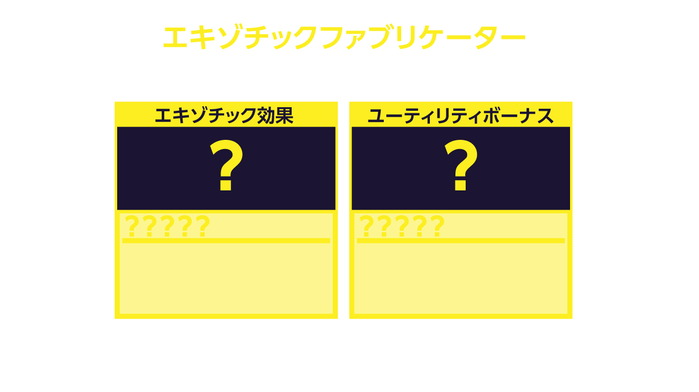

1. ミッション概要
基本ルール
モードの目標：「出発して生きて帰る」。チームプレイ推奨。
| 項目 | 内容 |
|---|---|
| 死亡時のペナルティ | プレイ中に死ぬと、そのレベルで拾った武器（現地入手武器）はすべて失われる。ただし「復元トークン」（イベントパスやミッション報酬で入手）を持っていれば防げる |
| チームプレイのメリット | チームを組んでいる場合、倒れてもミッション失敗にはならず、リスポンできる（ソロだとミッション失敗になりやすい） |
| ロードアウト武器の扱い | 任務の成功・失敗に関わらず、常に設定・使用可能 |
| 現地入手武器の制限 | アタッチメントの設定などのカスタマイズはできない |
| Operator Prestige（プレステージ）の条件 | レベルMAX到達＋エキゾチックスキルLv3＋ナイトメアスキルLv3＋グリッチ(Glitch)を複数回クリア（ソロでは難易度が高い）が必要。すべて満たすと「プレステージ可能」の表示が出る |
| Prestigeによるリセット内容 | 実行するとレベルが0に戻り、厳選したスキル（エキゾチック・ナイトメア含む）も最初から。厳選した現地入手武器も消失。ロードアウト武器もノーマルランクに戻る。最大3回まで可能（公式パッチノート情報）。進めるかどうかはプレイヤー自身の判断（実行前に説明文をよく確認することを推奨） |
| レベルキャップ到達後の隠し仕様 | 通常のレベル上限に達すると経験値を貯めてもレベルが上がらなくなる。グリッチ(Glitch)をクリアするとスキル選択画面が表示され、「既存スキルのレベルを+1する」か「新しいナイトメアスキルを追加する」かを選択できる。このスキル選択がオペレーターレベルの上昇に連動しており、結果としてグリッチを3回クリアするとレベルが+3される仕組みになっている（ユーザー実機確認） |
| グリッチ(Glitch)への参加方法 | ソロクリアは相当な実力が必要な高難度ミッション。マップ内チャットで「グリッチ行きませんか？」といった募集が英語・中国語で行われることが多く、日本語チャットはほぼ見られない。参加するには翻訳しながらチャットするか、マッチしたチームメンバーとマップ上のグリッチ地点にマーキングしてアピールするなどの対応が必要。 【Xboxでの翻訳手順例（ユーザー実践）】 ①スマートフォンの翻訳アプリのカメラ翻訳でゲーム画面のチャット内容を確認 → ②返信メッセージを翻訳アプリで翻訳してコピー → ③スマートフォンのXboxアプリ（本体リモート操作画面）でメッセージ欄にペーストしてゲーム内に送信（※上記はXboxでの一例） |
アクティビティ・ミッション詳細
| 名称 | 内容 | 備考 |
|---|---|---|
| パワーノード回収（ウィークリーミッション） | 「パワーノードを回収せよ」というウィークリーミッション。パワーノードは建物の上などにある、青く光るキューブ型のオブジェクト | 検索しても情報が出てこなかったため、実プレイで確認した情報 |
| 潜入アクティビティ：「敵の物体」を破壊する | エリア内で敵モンスターが何かに擬態している。探して撃つと正体を現すので、それを倒す | 正解となる擬態対象の法則はまだ不明。確認例：エリア3の家の中にあるソファ |
スペシャル・エリートエネミー図鑑
| 名前 | 特徴 | 攻撃パターン |
|---|---|---|
| アマルガム | 白い腕がなく、首から下はウネウネとした触手状の体 | 触手を伸ばしてプレイヤーを引き寄せて攻撃。足が速い |
| シフター | 白い大きな口、背中からも腕が生えている | 背中の腕でプレイヤーを掴んで噛みつき攻撃 |
| モーラー | 通常の敵より体が大きく、重装甲を身にまとっている | 何かを喋っている（詳細不明） |
| エルダーディサイプル | ローブ/フードをまとった人型の敵。空中を飛行する | 「フィアーエネミー」という敵を召喚する |
ワールドボス
フォークナー
- 出現場所・条件：マップ南西端の隔離された島。咲いている赤黒い花を破壊し、表示される数値が100%になると島のヘリポートに本物のボス「フォークナー」が出現
- 攻略手順：倒した後、死体を確認するとミッションクリアとなり専用エンディングが流れて任務終了
- 撃破報酬：エキゾチック武器ケースが確定ドロップ
ゾンビザウルス（旧仮称：トキシックタイラント）
- 出現場所・条件：ミッション発生時に通知が来る。ミッションエリア各所にひび割れたガラス状のものが出現
- 攻略手順：敵が大量発生し、エリートエネミーを倒すとアイテムをドロップするので、それを拾ってガラスにインタラクト。10箇所終えると出現
- 見た目：ゾンビのティラノサウルスのような姿
- 撃破報酬：オペレーターにエキゾチックスキルが付くケースをドロップ
- 【2026/07確認】：ボス戦のHPバー表示で「ゾンビザウルス」という名前を確認。旧仮称「トキシックタイラント」から正式名称が判明した可能性が高い
巨大ロボット アヴァロンの巨像「HEL-A27」
- 出現場所・条件：ミッション発生時に通知が来る。地面から指のようなものが出現し、赤い部分にインタラクトするとロボットの手足が生えてくる。倒し続けて100%まで貯まるとロボット本体が召喚される
- 攻略手順：足の裏または背中から内部へ侵入可能。内部では敵を倒していると床の一部が赤く光り、踏むと赤い光が走ってどこかの壁/天井のランプが点灯するので、それを破壊。これを繰り返すと中央天井のコアのバリアが解除され攻撃可能になる。破壊を繰り返すと撃破。終了後は数秒以内に出口から脱出するか、上にジャンプして頭部へ行き任務終了するかの2択
- 撃破報酬：オペレーターにエキゾチックスキルが付くケースをドロップ
メガアボミネーション
- 出現場所・条件：ミッション「謎のギルドコンテナ」終了後のナイトメアゾーンに出現するインタラクト可能な死体（?）を調べると発生。敵が大量発生し、数値が100%になると出現
- 見た目：3つの口を持ち、後ろ足と尻尾しかない特異な姿
- 撃破報酬：エキゾチック武器ケースが確定ドロップ
ズーサ
- 出現場所・条件：ミッション「乗っ取られた車列」で、巡回している3台の装甲車を破壊すると出現
- 見た目：腐ったクマのような姿。顔などに蜂の塊（巣？）が付着しており、その塊ごと飛んでくる
- 撃破報酬：エキゾチック武器ケースを確定ドロップ
- 【2026/07公式確認】：公式パッチノートによると、このボスに関連するアクティビティは「Possessed Convoy」と呼ばれる（Possessed Guild Convoyを破壊してズーサを撃破する内容）
2. ゲームルール・仕様メモ
| カテゴリ | 内容 |
|---|---|
| 名前付きエキゾチック武器の所持制限 | 現地調達の名前付きエキゾチック武器（銃器）は1つしか所持できない。新しいものを拾うと所持中のものと交換される。近接武器は別枠のため、銃器とは別に1つ所持可能 |
| 現地入手エキゾチックの所持制限 | 近接武器の現地入手エキゾチックは、銃器の現地入手エキゾチックを既に所持していても追加で入手・所持可能（別枠扱い） |
| ファブリケーターの可逆性 | ユーティリティボーナスの変更は必ず元に戻せるとは限らない可能性あり。実例:デュアルアクション→デュアルVELOX5.7変更後、再アクセス不可に |
| ワールドボスの死体インタラクトに関する注意 | ワールドボス討伐後、死体にインタラクトするとその時点でミッションクリアが確定する。武器ケースからの試し撃ち・交換作業中にうっかり死体へ触れると、意図しない所持状態のまま確定してしまう可能性があるため注意 |
| 現地ドロップのRoundsはランダム | 現地入手のエキゾチック銃器は、付与されているRounds効果が武器の説明文と一致しないことがよくある。ランダムに決定される仕様と思われる |
| ドロップアイテム | シーズン04(2026/06)より、Restore Tokenがエンドゲームのルートとしてドロップするようになった |
| 用語：Affinity Exotic | 名前付きエキゾチックが、対応する属性(Rounds)を伴った状態で発見された場合の呼称（海外コミュニティの非公式用語）。この判定は発見した時点のRoundsで決まり、後からファブリケーターでRoundsだけをリロールしても「Affinity Exotic」の資格は失われない |
| 用語：Affinity Utility Bonus | Affinity Exoticになると、対応する属性専用のユーティリティボーナス（属性一致ボーナス）を確率で引く可能性が生まれる（保証ではない）。ファブリケーターでこのボーナスだけを狙ってリロールすることも可能（海外報告では26回失敗した例もあり、根気が必要） |
| 用語：Exotic Cache（エキゾチック武器ケース） | 確定ドロップ: Dr.Falkner討伐、メガアボミネーション討伐、Possessed Convoy(ズーサ)討伐、Terminal Vectorアクティビティクリア。確率ドロップ: Zone4以上のHVT Elim/Prime Target/Surprise Shipment/Strongbox Crack/Gear Drop、Zone3以上のToxin Field、Zone4以上のエリート/Command Center titan撃破、Zone4以上のCommand Center内キャッシュ |
| 用語：Nightmare Zone(ゾーン5) | ボス戦開始時に出現し、以降ゲーム終了まで残り続ける円形エリア。最も敵が強く、報酬ランクも最高になる。メガアボミネーションはボス討伐後にこのゾーンに出現するリポップ型アクティビティ |

3. エキゾチック効果（Rounds）
武器に付与可能な8種類の弾薬属性（Affinity）
凍結弾Frost
命中で動きを鈍らせる。ダメージ・命中率が向上
重力子弾Graviton
命中でブラックホールを生成し、周囲の敵を致死的に吹き飛ばす
熱子弾Incendiary
命中で燃焼効果、時間経過とともにダメージを付与
花閃弾Mortar
命中で敵を狙う花火（追撃弾）を打ち上げる
崩脳弾Neuro-Disruption
命中で確率により一時的に敵を味方に転向させる
光子弾Photon
命中した敵から回復アイテム「ヒールグリフ」がドロップし、拾うと回復
電子弾Shock
命中でスタンさせ、電撃ダメージフィールドを生成
榴散弾Shrapnel
命中で確率によりアーマーを破壊
メモ： 「Mortar → 花閃弾」は直訳（迫撃）ではなく見た目の花火から命名。「Photon → 光子弾」の公式効果文：「各弾薬は通常の敵/スペシャルエネミーに命中すると確率で敵のHPを『ヒールグリフ』に変える」。ドロップアイテムは緑色に発光するカプセル型で中央に心電図の波形マーク。「Shrapnel(榴散弾)」は日本人YouTuberのコメント欄等で「爆発弾」という俗称で呼ばれることがあるが、これは公式名称ではない（アイコンが「爆発」であることに由来すると推測）。
↑ 先頭へ戻る
4. ユーティリティボーナス（汎用）
属性に関係なく出現する汎用ボーナス。アイコンごとにグループ分けされている。
🖐️ 手（機動力系）
| 日本語名 | 効果 |
|---|---|
| 高速 | あらゆる移動速度が上昇 |
| LIFESTYLE (英語:Lifestyle) | ヘッドショットで敵をキルするとHPが回復 (日本語ローカライズされておらず英語のまま表示。ファブリケーター選択画面・HYPERSURGEなどで確認) |
| ウルトラライト | エイム中のプレイヤーの移動速度が低下しない |
| キル&ラン | 敵をキルすると一時的に移動速度がブースト |
| コンバットレディ | エイムとダッシュ後の射撃速度が大幅に向上 |
| 高速射撃 | 武器の連射速度が上昇 (BARRAGEで確認) |
| ガンマン | 腰だめ撃ち時のばらつきと反動が大幅に向上 (KILONOVA・崩脳弾ドロップ時で確認) |
| リロード切替 | 武器が交換時に常にリロードされる (TORRENTで確認) |
💀 髑髏（ダメージ系）
| 日本語名 | 効果 |
|---|---|
| 狙い撃ち (Sharpshooter) | 上半身に命中するとヘッドショットと同じダメージを与える（コミュニティ内ではスナイパーライフルとの組み合わせでメタ言及されることが多く、「シャープシューター」とカタカナで呼ばれることも。新規アサルトライフル「VX Compact」でも装備可能なことを確認） |
| スラッシャー | 近接攻撃を繰り出す速度が向上 (近接武器以外での出現は未確認。近接武器専用の可能性あり。海外コミュニティ情報（Steamガイド）でも、通常武器のユーティリティ対応表のどこにも出現しておらず、近接武器専用説を補強する材料あり。ただし二次情報のため断定はできない) |
| グレネード弾 | 弾丸が爆発し、追加の範囲ダメージを与える (1911のみ確認・仮説段階) |
| 炸裂弾 (Explosive Bullets・推定) | 弾丸が爆発し、追加の範囲ダメージを与える (グレネード弾と説明文が同一。PULSEBREACHのShock属性ドロップ時でも確認され、汎用枠として存在することを実証) |
| Velox Akimbo 5.7 (表示は「デュアルVELOX 5.7」) | 対象武器がデュアル武器（2丁持ち）になる 【訂正】以前「デュアル[武器名]」という汎用枠と推測していたが、海外wiki情報によりMalspike専用の武器固有ボーナスであり、他の武器では出現しないことが判明 |
| ショットガニフィケーター (Shotgunificator) | 武器の弾が拡散するようになる (KILONOVA・花閃弾ドロップ時で確認。海外wiki確認: KILONOVA専用の武器固有ボーナスで他の武器では出現しない) |
🎯 照準（反動・命中系）
| 日本語名 | 効果 |
|---|---|
| 反動削除 | 反動制御が大幅に向上 |
| ロングショット | 射程距離が大幅に向上。反動をわずかに軽減 |
🔫 弾薬系
| 日本語名 | 効果 |
|---|---|
| 撃ち放題 | 全ての弾薬が1つの大きなマガジンに入っている |
| 弾薬リチャージャー | 武器の収納中に弾薬が補充される |
| 廃棄物ゼロ (英語:Zero Waste) | 弾丸を発射しても50%の確率で弾薬を消費しない (ZEOTROPEで確認) |
| 弾薬減少 | キル後に弾薬をマガジンに追加 (PULSEBREACHで確認。弾薬リチャージャーとは発動条件が異なる別ボーナス) |
| ロングバースト | 各バーストで発射する弾の数が増える (Pulsebreach(Swordfish A1)で確認) |
| 近接リロード | 近接ヒット後、すぐに武器のマガジンが充填される (SWARMFORGE・OVERCHARGEで確認。アイコンは弾薬系と共通と実機確認済み) |
⚔️ 近接系（アイコン未確認）
| 日本語名 | 効果 |
|---|---|
| Parry（パリー） (未ローカライズ) | 強近接攻撃チャージ中の被ダメージを軽減（近接武器専用）。海外wikiの武器対応表では「紫」表記＝エキゾチック武器ケース限定の専用ボーナス |
5. 属性一致ユーティリティボーナス（推定訳）
【謎が解明・海外wiki情報】「Affinity Exotic」（対応する属性で発見された個体）の判定は発見時点のRounds属性で決まり、ファブリケーターでのリロール後も変わらない。Affinity Exoticは対応する属性一致ボーナスを確率で引く（保証ではない）ため、同じ個体でも出たり出なかったりする。これらのボーナスの多くは標準ユーティリティボーナスより弱いとされ、強さ目的ではなくレア度・見た目狙いで集めるものとされている。
日本語名は未確認のため、以下は英語からの推定訳です。 実機確認が最優先タスク。
| 属性 | ボーナス名(英語) | 効果（日本語名は一部未確認） |
|---|---|---|
| 凍結弾 | Flash Freeze | 凍結弾が複数の敵に同時発動することがある |
| 凍結弾 | Ice Cloud | 氷雲 (確定) — 凍結した敵をキルすると、敵の動きを鈍らせる雲が残ることがある。ZEOTROPE(ショットガン)で凍結弾Roundsとセットで現地ドロップした実例で確認（属性一致ボーナス実例第6号） |
| 重力子弾 | Black Hole | ブラックホール (確定) — 重力子弾がブラックホールを作り出して敵を吸い込んだ後、近くの生存者達をテレポートさせる。KILONOVA(サブマシンガン)で重力子弾Roundsとセットで現地ドロップした実例で確認（属性一致ボーナス実例第2号） |
| 重力子弾 | Warp | ワープした敵がダメージを与え、周囲の敵を巻き込む |
| 熱子弾 | Firebomb | 燃焼中の敵を倒すと爆発する |
| 熱子弾 | Petrol | 熱子弾が地面に炎だまりを残す |
| 花閃弾 | Fire Wheel | 敵の周囲を回転する火の輪を2つ生成する |
| 花閃弾 | Starburst | スターバースト (確定) — 花閃弾が爆発し、敵にフレアを放つ。DEFRAGで花閃弾Roundsとセットで現地ドロップした実例で確認（属性一致ボーナス実例第3号） |
| 崩脳弾 | Mass Disruption | 大規模妨害 (確定) — 味方になっている敵が一定確率で他の敵を味方につける。NEUROWALL(Warden 308)のファブリケーター選択画面で確認（属性一致ボーナス実例第7号） |
| 崩脳弾 | Neural Attraction | 神経の引力 (確定) — 味方になっている敵が他の敵の注意を一時的にそらす。NEUROWALL(Warden 308)で確認（属性一致ボーナス実例第5号）。このドロップの実際のRounds属性は電子弾(Shock)で崩脳弾ではなかったが、フレーバーテキスト上の属性(崩脳弾)に対応するボーナスが出現した |
| 光子弾 | Blessing | ヒールグリフに一時的なボーナス体力が付くことがある |
| 光子弾 | Dual Action | デュアルアクション (確定) — ヒールグリフ消費で体力自動回復が一時的に向上。光子弾Roundsとセットで現地ドロップした実例で確認（属性一致ボーナス実例第1号） |
| 電子弾 | Chain Lightning | スタンした敵が他の敵にもスタンを伝播させる (メタ的に強いと言われる) |
| 電子弾 | Lightning Strike | 上空から雷が落ち、敵をスタンさせる |
| 榴散弾 | Blast Chain | ブラストチェイン (確定) — アーマーを破壊する爆発が発生すると、追加の爆発が3回連続で発生。KILLSWITCH(AK-27)で榴散弾Roundsとセットで現地ドロップした実例で確認（属性一致ボーナス実例第4号） |
| 榴散弾 | Blast Shield | 榴散弾が複数の敵に命中すると、被ダメージが軽減される |
| 全属性共通 | Big Game | 対応する属性の効果がエリートエネミーにも発動するようになる（属性ごとに個別のBig Gameが存在）。光子弾版は確定・実機確認済み — 効果:「光子弾がエリートエネミーに発動可能」。MALSPIKE(ピストル)で光子弾Roundsとセットで現地ドロップした実例で確認（属性一致ボーナスの実例第8号） |
6. 名前付きエキゾチック武器と属性(Affinity)
各武器固有のエキゾチック名と対応する属性(Rounds)。属性一致でドロップすると専用のユーティリティボーナスが追加される。
日本語名は現時点で未確認（要検証タスク参照）。
⚠️【要検証】下表の属性(Rounds)はフレーバーテキストに記載された想定属性。実際のドロップ時の属性はこれと異なる場合が多いことが判明している（現地ドロップのRoundsランダム仕様の可能性）。2026/07時点、確認済み8種のうち一致3種（Killswitch/Kilonova/DEFRAG）・不一致5種（Barrage/Cryoshear/Backdrive/Criticality/Continuum）。ランダム仕様の可能性が高くなってきたが、断定するにはサンプル継続収集が必要。
| エキゾチック名 | 武器名 | 属性(英語) | 属性(日本語) |
|---|---|---|---|
| Flashburst | M8A1 | Frost | 凍結弾（フレーバー）／実際は花閃弾 (不一致・実機確認済み) |
| Zeotrope | Echo 12 | Frost | 凍結弾 (一致・実機確認済み) |
| Continuum | Hawker HX | Graviton | 重力子弾（フレーバー）／実際は電子弾 (不一致・実機確認済み) |
| Torrent | M15 Mod 0 | Graviton | 重力子弾 |
| Collateral | EGRT-17 | Incendiary | 熱子弾（フレーバー）／実際は榴散弾 (不一致・実機確認済み) |
| Overcharge | M10 Breacher（表示未確認） | Incendiary | 熱子弾 (一致・実機確認済み) |
| Criticality | A.R.C. M1 | Mortar | 花閃弾（フレーバー）／実際は熱子弾 (不一致・実機確認済み) |
| Redline | XM325 | Mortar | 花閃弾 |
| Ghostmind | VS Recon | Neuro-Disruption | 崩脳弾（フレーバー）／実際は光子弾 (不一致・実機確認済み) |
| Neurowall | Warden 308 | Neuro-Disruption | 崩脳弾（フレーバー、実機確認）／実際のRoundsは電子弾 (不一致だが属性一致ボーナスは出現) |
| Malspike (表記:MALSPIKE) | VELOX 5.7 | Photon | 光子弾 (一致・実機確認済み) |
| Swarmforge | MPC-25 | Photon | 光子弾（フレーバー）／実際は凍結弾 (不一致・実機確認済み) |
| Backdrive | Dravec 45 | Shock | 電子弾（フレーバー）／実際は花閃弾 (不一致・実機確認済み) |
| Hypersurge | Sokol 545 | Shock | 電子弾 |
| Reboot | 1911 | Shock | 電子弾（フレーバー）／実際は電子弾以外 (不一致・複数回ドロップで確認。1回目は具体的属性未記録、2回目は凍結弾) |
| Barrage | Razor 9mm | Shrapnel | 榴散弾 |
| Killswitch | AK-27 | Shrapnel | 榴散弾 |
| Pulsebreach | Swordfish A1 | Shrapnel | 榴散弾 |
| Cryoshear (表記:CRYOSHEAR) | KATANA（近接武器） | Graviton (ドロップ時のランダム効果) | 重力子弾 (現地ドロップのため変動あり) |
| DEFRAG（表記のまま） | MK35 ISR(海外wikiで確認) | Mortar | 花閃弾 |
| Kilonova | VST(海外wikiで確認) | Graviton | 重力子弾 (実機確認済み) |
| Infraradiance | SG-12(海外wikiで確認) | Photon | 光子弾（フレーバー）／実際の属性は不明 (実機確認済み・表示バグあり・具体的属性は未記録) |
ルール： Fabricatorでアップグレードした自作エキゾチックには属性一致ボーナスは付かない。Exotic Weapon Caseから出た名前付きエキゾチックのみ対象。
確認済み： 武器名・エキゾチック名は日本語版でも翻訳されず英語/ローマ字表記のまま（MALSPIKE / VELOX 5.7で確認）。フレーバーテキストも付く。例:「小型ながら最大火力を引き出すよう改造されたバーストピストル。光子弾との相性が良い」
確認済み（仕様）： 現地入手のエキゾチック銃器・武器は、付与されているRounds効果が武器のフレーバーテキストと一致しないことがよくある。CRYOSHEAR(KATANA)はフレーバーで「凍結弾との相性が良い」とあるが実際は重力子弾が付与されていた。ランダムに決定される仕様と考えられる（CRYOSHEAR固有の不具合ではなく既知の挙動）。なお2026/07、公式情報でも「Melee weapon cold-forged into an unstoppable force. Affinity for Frost Rounds.」と記載されており、フレーバーテキスト側の属性（凍結弾）自体は公式に裏付けられた。
新規発見： DEFRAG・Kilonova・Infraradianceは元のリスト(18種)には無い新しいエキゾチック。シーズン04の公式パッチノート（2026/06/03・6/25 Reloaded）で追加が確認された。DEFRAGの武器カテゴリ表示は「アサルトライフル」（実機で完全表示を確認済み）。属性(Rounds)は公式情報でMortar(花閃弾)と確認済み（公式フレーバーテキスト:「Full-auto assault rifle augmented for extreme accuracy. Affinity for Mortar Rounds.」）。ただし具体的な武器モデル名は未確定。ユーティリティボーナスは「コンバットレディ」を確認。実機で花閃弾(Mortar)Roundsを伴うドロップを確認済み。フレーバーテキストと一致。属性一致ボーナス「スターバースト」（効果:「花閃弾が爆発し、敵にフレアを放つ」）も同時に付与されていた（属性一致ボーナスの実例第3号）。Kilonova（サブマシンガン、公式フレーバーテキスト:「Full-auto submachine gun enhanced for mobility and close-quarters power. Affinity for Graviton Rounds.」）は実機で3回のドロップを確認、毎回異なる属性：①重力子弾(Graviton)+ブラックホール（フレーバー通り・属性一致ボーナス実例第2号）②花閃弾(Mortar)+ショットガニフィケーター（効果:「武器の弾が拡散するようになる」）③崩脳弾(Neuro-Disruption)+ガンマン（効果:「腰だめ撃ち時のばらつきと反動が大幅に向上」）。同一武器で3種の異なる属性が確認されたことで、Roundsはドロップごとに独立してランダム決定される仕様である可能性が非常に高いと言える。Infraradiance（ショットガン、公式フレーバーテキスト:「Semi-auto shotgun altered for non-stop assault and aggression. Affinity for Photon Rounds.」）は属性(Rounds)は公式確認済み。実機ドロップも確認済みだが、表示バグがあり、ドロップ時に付与されていた具体的な属性の種類までは未記録。武器モデル名は未確定。
実証済み： PULSEBREACH(Swordfish A1)で複数回ドロップを確認（崩脳弾+弾薬減少／電子弾+炸裂弾）。炸裂弾がShrapnel以外の属性でも出現したことから、1911専用の「グレネード弾」とは別に、炸裂弾は汎用枠として複数の武器に出現することが実証された。
SWARMFORGE(MPC-25)： 凍結弾(Frost)+近接リロードのドロップを確認。本来の属性は光子弾(Photon)のはずだが、現地ドロップのRoundsランダム仕様の追加実例となった。
REBOOT(1911)： グレネード弾ボーナスのドロップを確認。実際のRounds属性は本来のフレーバー(電子弾/Shock)とは異なっていた（不一致）ことは判明しているが、具体的にどの属性だったかは未記録。
REBOOT(1911) 追加ドロップ実例： 凍結弾(Frost)+グレネード弾のドロップを確認（上記とは別タイミングの実例）。本来の属性は電子弾(Shock)のはずだが、現地ドロップのRoundsランダム仕様の追加実例となった。
OVERCHARGE(ショットガン)： 熱子弾(Incendiary)+近接リロードのドロップを確認。本来の属性通りで一致（Killswitch/Kilonova/DEFRAGに続く一致例）。武器名「M10 Breacher」の実機表示は、この時点ではまだ別画面（武器詳細/インベントリ等）で確認できていない（要継続確認）。
KILLSWITCH(AK-27)： 榴散弾+撃ち放題のドロップを確認（属性通り）。武器カテゴリ表示は「レトライフル」（アサルトライフルの表示が画面端で切れている可能性あり）。
BARRAGE(Razor 9mm)： 崩脳弾+高速射撃のドロップを確認。本来の属性は榴散弾のはずだが、現地ドロップのRoundsランダム仕様の追加実例となった。武器カテゴリ表示は「プマシンガン」（サブマシンガンの表示が画面端で切れている可能性あり）。
BACKDRIVE(Dravec 45)： 花閃弾(Mortar)+ロングショットのドロップを確認。本来の属性は電子弾(Shock)のはずだが、現地ドロップのRoundsランダム仕様の追加実例となった。武器カテゴリ表示は「フマシンガン」（サブマシンガンの表示が画面端で切れている可能性あり）。
CRITICALITY(A.R.C. M1)： 熱子弾(Incendiary)+ウルトラライトのドロップを確認。本来の属性は花閃弾(Mortar)のはずだが、現地ドロップのRoundsランダム仕様の追加実例となった。武器カテゴリ表示は「擲弾ランチャー」（推定、視認しづらい表示）。
CONTINUUM(Hawker HX)： 電子弾(Shock)+コンバットレディのドロップを確認。本来の属性は重力子弾(Graviton)のはずだが、現地ドロップのRoundsランダム仕様の追加実例となった。武器カテゴリ表示は「スナイパーライフル」（表示が画面端で切れている可能性あり）。
REDLINE(XM325)： 榴散弾(Shrapnel)+コンバットレディのドロップを確認。本来の属性は花閃弾(Mortar)のはずだが、現地ドロップのRoundsランダム仕様の追加実例となった。武器カテゴリ表示は「サブマシンガン」。
HYPERSURGE(Sokol 545)： 凍結弾(Frost)+ウルトラライトのドロップを確認。本来の属性は電子弾(Shock)のはずだが、現地ドロップのRoundsランダム仕様の追加実例となった。
TORRENT(M15 Mod 0)： 重力子弾(Graviton)+リロード切替のドロップを確認。本来の属性通りで一致。新規ボーナス「リロード切替」（効果:「武器が交換時に常にリロードされる」）を確認。
KILLSWITCH(AK-27)の追加ドロップ： 属性一致ボーナス「ブラストチェイン」（効果:「アーマーを破壊する爆発が発生すると、追加の爆発が3回連続で発生」）を確認（属性一致ボーナスの実例第4号）。
NEUROWALL(Warden 308)： 電子弾(Shock)+神経の引力(Neural Attraction)のドロップを確認。フレーバーテキスト（実機確認）:「高精度射撃に特化したダブルアクション。崩脳弾との相性が良い」。このドロップの実際のRounds属性は電子弾で、フレーバーテキスト上の属性(崩脳弾)とは異なっていたが、崩脳弾用の属性一致ボーナス「神経の引力」が出現した（属性一致ボーナスの実例第5号）。追加ドロップ確認：同じ電子弾(Shock)Roundsで再度ドロップしたが、今回は汎用ボーナス「炸裂弾」が出現し、「神経の引力」は出なかった。【謎が解明】海外wiki情報により、「Affinity Exotic」の判定は発見時点のRounds属性で決まり、ファブリケーターで後からRoundsだけをリロールしても判定は変わらないことが判明。よってこのNEUROWALLは元々崩脳弾で発見されたAffinity Exoticの個体が、後でRoundsだけ電子弾にリロールされ、属性一致ボーナスを引く資格（確率）は保持されたまま、という可能性が高い。
COLLATERAL(EGRT-17)： 榴散弾(Shrapnel)+撃ち放題のドロップを確認。本来の属性は熱子弾(Incendiary)のはずだが、現地ドロップのRoundsランダム仕様の追加実例となった。武器カテゴリ表示は「レトライフル」。
ZEOTROPE(Echo 12)： 凍結弾(Frost)+氷雲(Ice Cloud)のドロップを確認。武器カテゴリ表示は「ショットガン」。本来の属性通りで一致。属性一致ボーナス「氷雲」（効果:「凍結した敵をキルすると、敵の動きを鈍らせる雲が残ることがある」）を確認（属性一致ボーナスの実例第6号）。
FLASHBURST(M8A1)： 公式フレーバーテキスト（実機確認）:「持続的かつ致命的な制圧効果を雨のごとく降らせることに特化したバーストマークスマンライフル。凍結弾との相性が良い」。2回のドロップを確認: ①花閃弾(Mortar)+弾薬リチャージャー ②花閃弾(Mortar)+炸裂弾。2回とも花閃弾で、フレーバー属性(凍結弾)とは不一致。武器カテゴリ表示は「バーストDM」。
MALSPIKE(VELOX 5.7)： 光子弾(Photon)+ビッグゲームのドロップを確認。武器カテゴリ表示は「ピストル」。本来の属性通りで一致。属性一致ボーナス「ビッグゲーム」（効果:「光子弾がエリートエネミーに発動可能」）を確認（属性一致ボーナスの実例第8号）。
GHOSTMIND(VS Recon)： 光子弾(Photon)+炸裂弾のドロップを確認。武器カテゴリ表示は「スナイパーライフル」。本来の属性は崩脳弾(Neuro-Disruption)のはずだが、現地ドロップのRoundsランダム仕様の追加実例となった。
↑ 先頭へ戻る
7. 武器固有ボーナスの仮説
| 武器 | ボーナス | 状態 |
|---|---|---|
| 1911 | グレネード弾／炸裂弾 | 他のハンドガンでは未確認。属性一致枠とは別の武器固有枠の可能性（仮説・要検証） |
8. 今後の検証タスク
- 中 18種の名前付きエキゾチック武器名の日本語表示を確認（カタカナ or 英語表記）
- 高 各属性一致ボーナスの実機日本語名を確認
- 低 1911の「グレネード弾/炸裂弾」が他武器で本当に出ないか継続検証
- 中 「グレネード弾」と「炸裂弾」が別枠か同一枠のバリエーションか確認
- 中 Xbox本体言語を英語に切り替えて対応関係を直接確認
- 確認済 DEFRAGの属性(Rounds)を確認 → 公式情報でMortar(花閃弾)と確認済み。ただし武器モデル名は未確定のため引き続き要確認
- 中 エンドゲームモードのミッション/ラウンド構成の情報収集
- 高 名前付きエキゾチック武器の属性(Rounds)がフレーバーテキスト通り固定か、現地ドロップ同様ランダムか検証。2026/07時点、確認済み8種中一致3種(Killswitch/Kilonova/DEFRAG)・不一致5種(Barrage/Cryoshear/Backdrive/Criticality/Continuum)。ランダム仕様の可能性が高くなってきたが断定には継続検証が必要
- 要注意 ファブリケーターでのユーティリティボーナス変更は必ず元に戻せるとは限らない可能性。実例：デュアルアクション→デュアルVELOX5.7に変更後、再アクセス不可になり元に戻せなかった。再現性・条件を確認
- 中 「スラッシャー」が近接武器専用ボーナスかどうか継続検証（近接武器以外での出現例を探す）